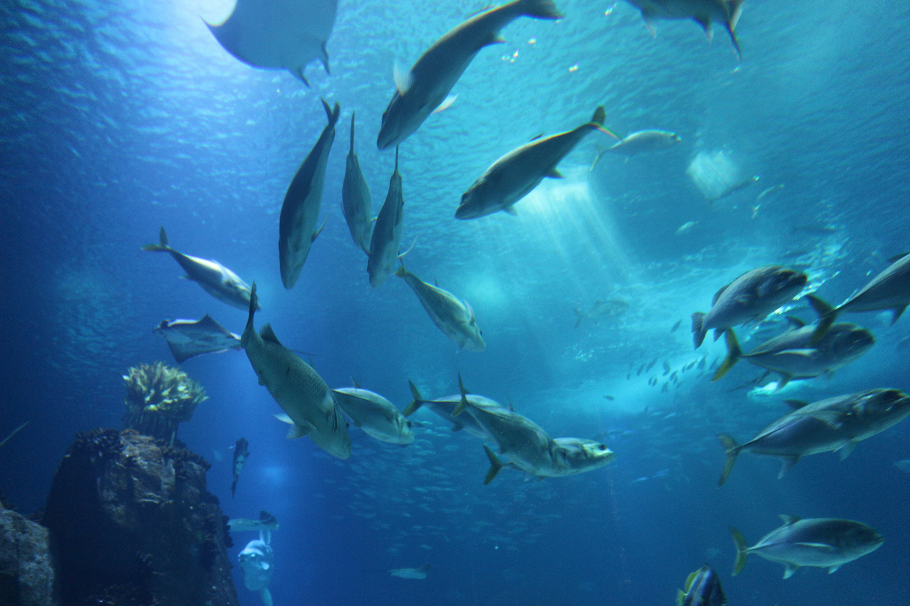

Ocean
Pollution
Millions of tons of plastic enter our oceans yearly. We must reduce waste and support cleanup efforts to save marine life.
- Eliminate single-use plastics
- Support beach cleanups
- Promote recycling policies
Protect Our Oceans for Future Generations
Explore SDG14
Millions of tons of plastic enter our oceans yearly. We must reduce waste and support cleanup efforts to save marine life.

Coral reefs and endangered species are at risk due to climate change. Protecting their habitats is crucial for ocean health.
Overfishing depletes fish stocks faster than they can replenish. Sustainable practices ensure food security and ocean balance.
Explore our dedicated topics researched and created by Team CORAL.
Student 1 Content Page
Read articleStudent 2 Content Page
Read articleStudent 3 Content Page
Read articleStudent 4 Content Page
Read article